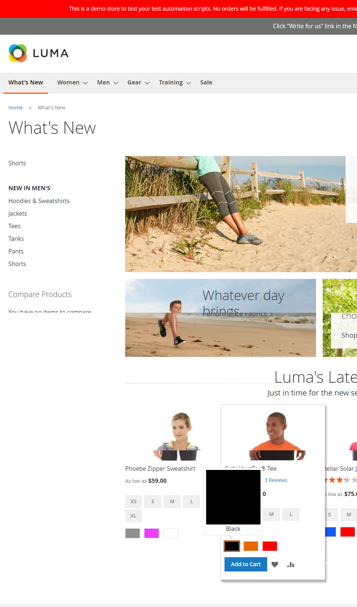
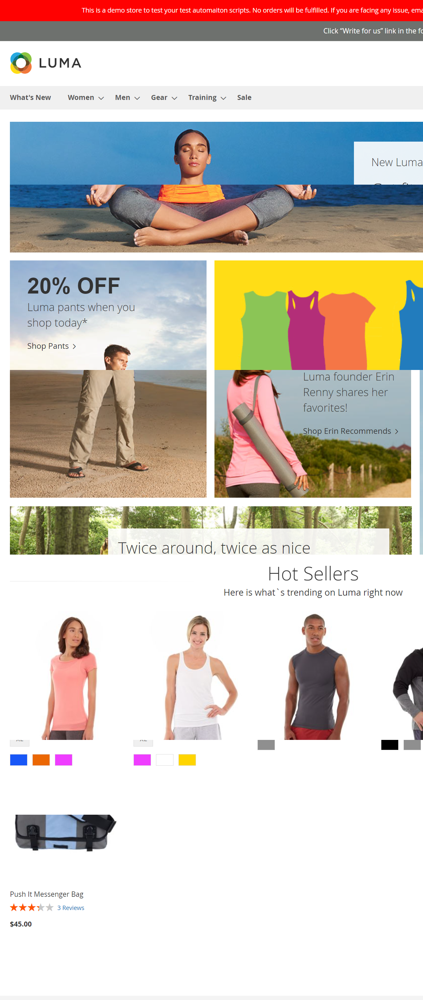

Started
nov. 15, 2023 04:04:19 PM
Ended
nov. 15, 2023 04:05:28 PM
Features Passed
1
Features Failed
1
Features
Scenarios
Steps
Timeline
Tags
| Name | Passed | Failed | Skipped | Others | Passed % |
|---|---|---|---|---|---|
| @women | 0 | 1 | 0 | 0 | 0% |
| @test | 1 | 1 | 0 | 0 | 50% |
| @accueilPage | 1 | 0 | 0 | 0 | 100% |
System/Environment
| Name | Value |
|---|---|
| Engineer | Abdelhafidh Wajdi |
| Project | Luna Project test reports |
| Browser | Google chrome |
| os | windows |
-
Verify that all links lead to the correct pages
16:04:20 / 00:00:23:876 Pass
Verify that all links lead to the correct pages
11.15.2023 16:04:20 11.15.2023 16:04:44 00:00:23:876 · #test-id=1As a user I want to ensure all links in the Accueil page lead to the correct pages So that I can navigate the site effectivelyPasscheck WHATS NEW linkGiven I am on the Accueil pageWhen I click on whats new linkThen I should be redirected to whats new pagecom.e2eTests.stepDefinition.Hooks.runsAfterAnyScenario(io.cucumber.java.Scenario)image -
Verify Womens Menu and page fonctionality
16:04:44 / 00:00:43:945 Fail
Verify Womens Menu and page fonctionality
11.15.2023 16:04:44 11.15.2023 16:05:28 00:00:43:945 · #test-id=8Failcheck Jakets links in womens menuGiven I am on the Accueil pageWhen I click on the link Women Jakets through the hidden menuThen I should be redirected to Jackets pageStep skippedcom.e2eTests.stepDefinition.Hooks.runsAfterAnyScenario(io.cucumber.java.Scenario)image
-
@women
1 tests
@women
1 failedStatus Timestamp TestName Fail 16:04:44 PM check Jakets links in womens menu Verify Womens Menu and page fonctionality.check Jakets links in womens menu -
@test
2 tests
@test
1 passed 1 failedStatus Timestamp TestName Pass 16:04:20 PM check WHATS NEW link Verify that all links lead to the correct pages.check WHATS NEW linkFail 16:04:44 PM check Jakets links in womens menu Verify Womens Menu and page fonctionality.check Jakets links in womens menu -
@accueilPage
1 tests
@accueilPage
1 passedStatus Timestamp TestName Pass 16:04:20 PM check WHATS NEW link Verify that all links lead to the correct pages.check WHATS NEW link
-
org.openqa.selenium.json.JsonException
1 tests
org.openqa.selenium.json.JsonException
1 failedStatus Timestamp TestName Fail 16:04:50 PM When I click on the link Women Jakets through the hidden menu Verify Womens Menu and page fonctionality.check Jakets links in womens menu.When I click on the link Women Jakets through the hidden menu